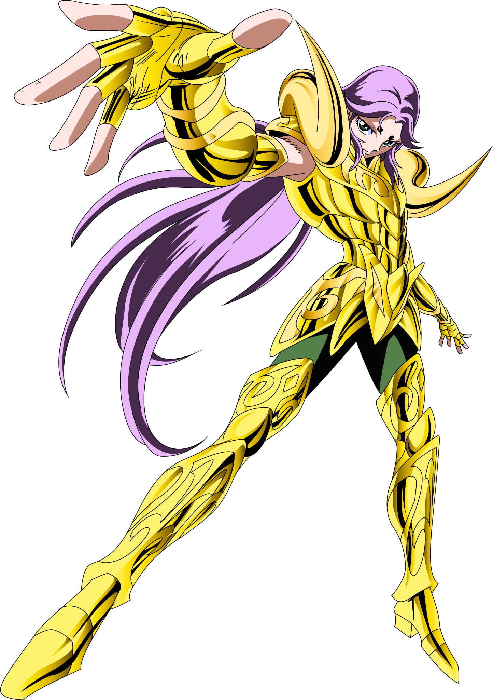

Mu de Áries
Com uma personalidade serena e pacífica, Mu de Áries é o guardião da primeira casa zodiacal e o único mestre na arte de restaurar armaduras. Discípulo do antigo Grande Mestre Shion, ele possui um domínio excepcional da telecinésia e uma vasta compreensão do cosmo, servindo como mentor estratégico para seus aliados. Sua versatilidade em combate é notável, utilizando defesas como a Muralha de Cristal e ataques devastadores como a Extinção Estelar. Sua jornada foi marcada pelo apoio crucial aos Cavaleiros de Bronze e pela resistência heroica contra os Espectros de Hades, provando sua lealdade a Atena. Seu fim heroico acontece no submundo, onde se sacrifica com os outros Cavaleiros de Ouro para destruir o Muro das Lamentações, garantindo a passagem para os Campos Elíseos em um ato de suprema abnegação.
